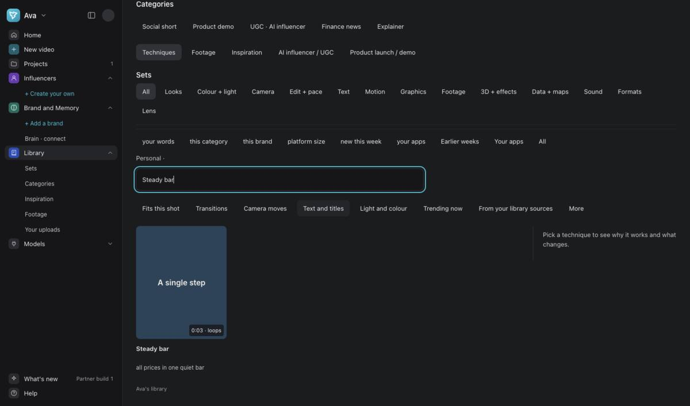
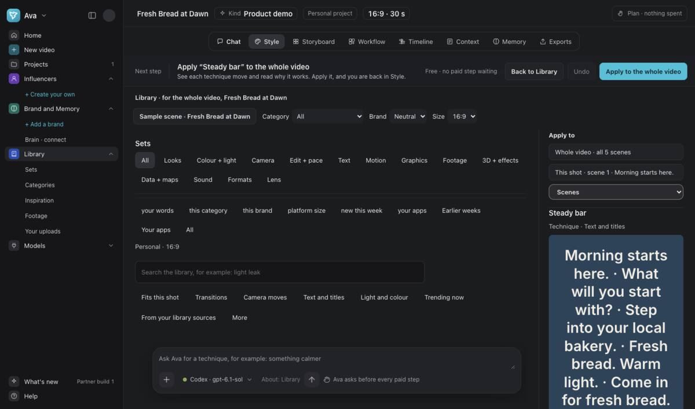
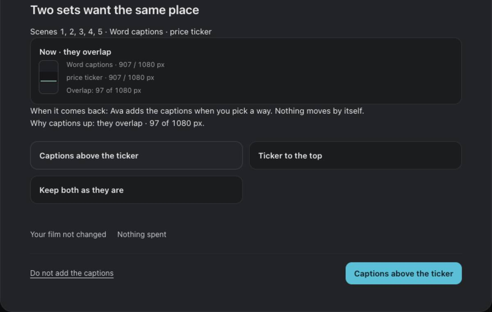
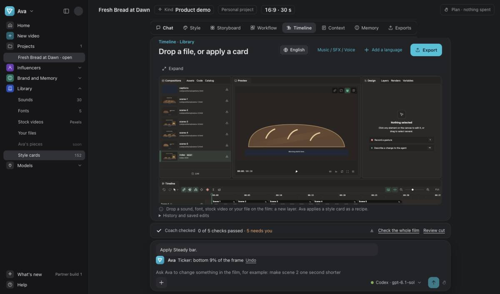
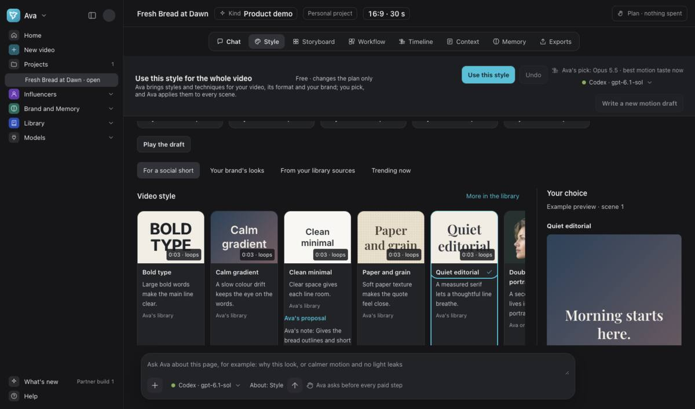
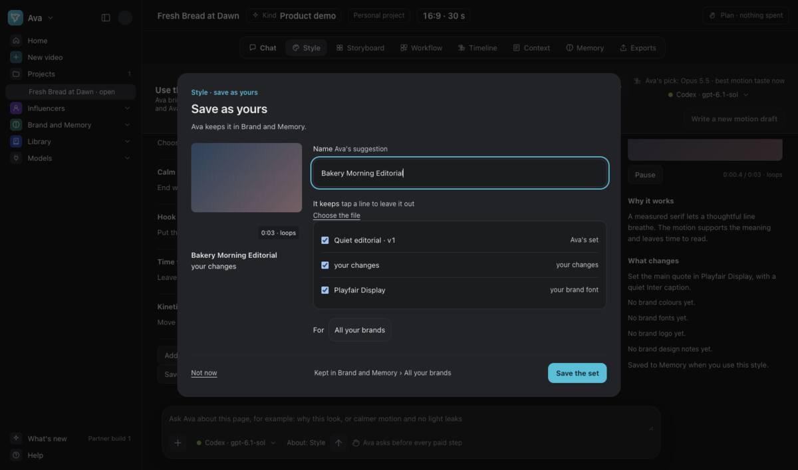
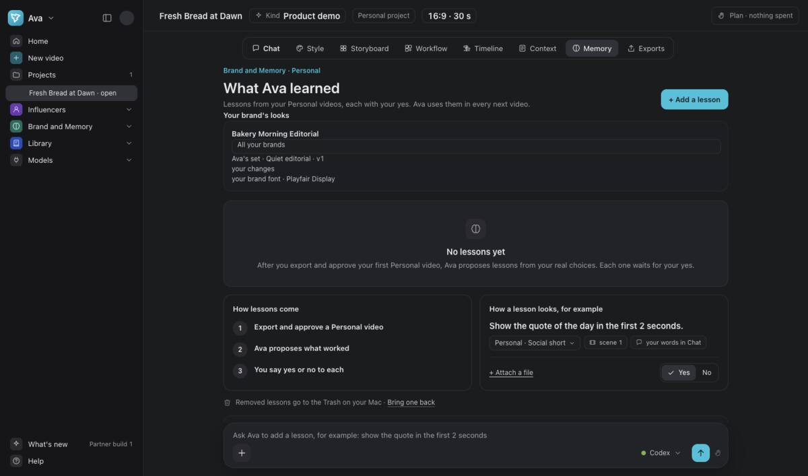

Style and Library
Apply a Library set. Try Undo. Save a look as yours.
At the end: You can apply a whole-video set, undo it, and save a look.
Open the saved bakery film. Keep its current motion draft for this session.
The steps add to 60 minutes. Pause when you need to. Making files can take longer.
Browse Library sets
8 minGo to Home. Open Library → Sets from its side menu.
Choose Text and titles. Search for Steady bar. Select it and choose the bakery project.


Check where the set goes
8 minFor this session, choose Whole video. Check that it names all five bakery scenes.
One scene: select the scene on Timeline first. This version can lose that choice when Library opens.
Do not apply if This shot names another scene. Contact the person who invited you.
Range: Scenes offers a range. Check the scene numbers before applying. Use Whole video for this session.


Apply Steady bar
10 minChoose Apply to the whole video. Wait for the change to finish.
Open Timeline. Play the film and check the bar in each scene.

Only if sets overlap
6 minA ticker is a bar of words. Steady bar uses the bottom of the frame.
If Ava shows an overlap when you add captions over a ticker, read the choices first.
Captions above the ticker moves the captions above it.
Ticker to the top leaves the captions low.
Keep both as they are keeps the overlap. Do not add the captions cancels the addition.


Try Undo
8 minChoose Undo beside the change in chat. Play the film again.
Check that the bar is gone. The earlier bread-only frame returns in this example.


Pick a look to keep
6 minOpen Style. Select a look you want to keep, such as Quiet editorial.
Use this choice for the saved look in the next step.


Save as yours
10 minScroll to Save as yours at the bottom of Style. Open it.
Give the look a name. Choose your brand or All your brands. Choose Save the set.


Find your saved look
4 minOpen Memory to find Brand and Memory. Check that the look has your saved name.
The saved look stays after you close and reopen the project.

